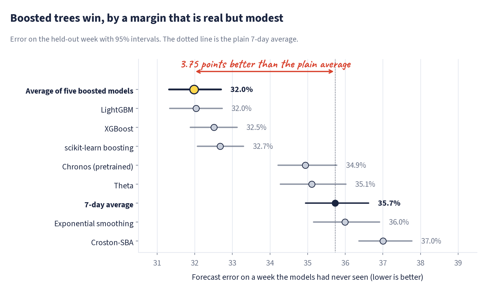
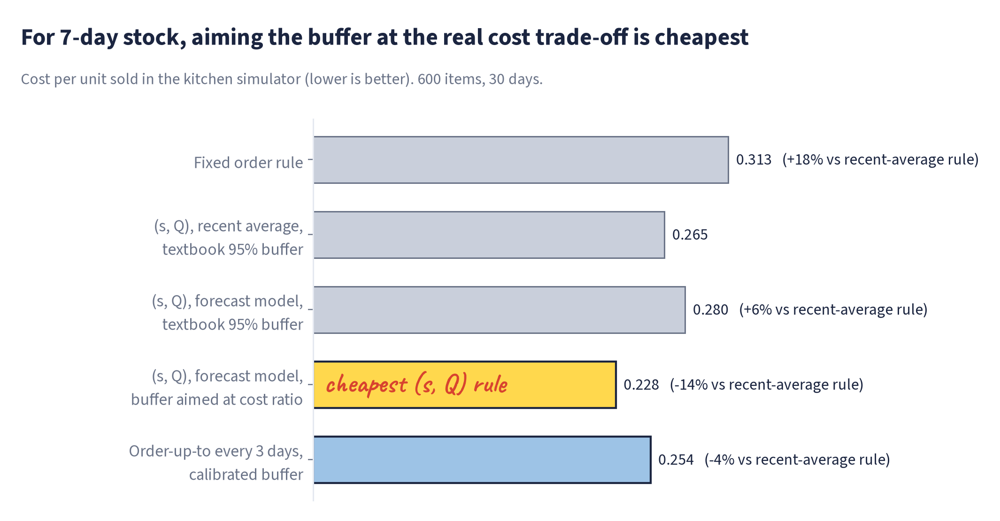
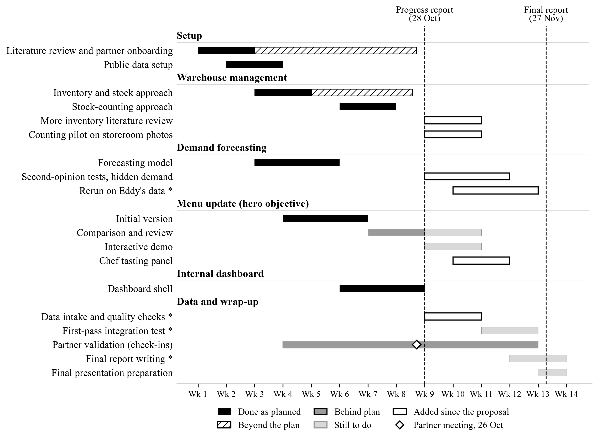

Final Year Project · INDE 501 / 502 · 2026–2027
An AI-powered franchise intelligence platform for Eddy's Hospitality Group
Eddy's runs three Lebanese street-food brands across seven branches, around the clock, and still orders stock from experience. Our team is building four working prototypes that help the group decide what to prepare, what to order and what to put on the menu. People stay in charge of the final decision.
The problem
Perishable food makes ordering a two-sided risk. If a branch orders too little, it runs out. If it orders too much, the surplus is thrown away. Roast beef at Eddy's lasts about two days, and branches order tomorrow's kaake from yesterday's sales. A busy day can empty the shelf, and a quiet one leaves waste. Sales records also understate demand: when an item sells out, recorded sales stop even though customers still wanted it.
My role: demand forecasting lead
Of the project's four objectives (warehouse management, demand forecasting, menu update and an internal dashboard), I lead demand forecasting. The goal is a daily forecast for each dish and branch, one to seven days ahead, with a low-to-high range rather than a single number. Because Eddy's own data had not arrived yet, I built and tested the method on a public dataset of 8,000 fresh-retail item-store series (FreshRetailNet-50K). The plan is to rerun every test on Eddy's records as soon as they arrive.
- Compared sixteen forecasting methods, from simple averages to pretrained models such as Chronos, against a plain 7-day-average benchmark.
- Selected an average of five boosted-tree models as the final model: 32.0% error against 35.7% for the benchmark on a held-out week, 3.75 points better (95% interval 3.5 to 4.1).
- Added forecast ranges and calibrated them so that the 80% range covers 82.6% of outcomes, up from 73.5% before calibration.
- Next steps this semester: an interpretable second-opinion model, recovering hidden demand from hourly sell-out times, and stress-testing the 18 assumptions behind our stand-in dataset.

The result that surprised us
A more accurate forecast did not give cheaper stock at first. With the textbook safety buffer, the forecast-driven policy cost 6% more than ordering from a plain recent average. It became 14% cheaper only after we sized the buffer from our own forecast errors and set the service target from the real cost of a lost sale compared with the cost of waste. The literature on forecasting for inventory reports the same pattern.

Where the project stands
All four prototypes have been running since 5 October 2026, and the project has 244 automated tests. We have written two literature reviews, a data request and a data-cleaning protocol, and met Eddy's on 26 October. Eddy's data is on the critical path. To limit the delay, we built a clearly labelled stand-in dataset (728 days, 4 branches, 12 dishes) so the full pipeline is ready to run on the day the real data arrives. In FYP II (Spring 2027) we will integrate the four components, recalibrate them on Eddy's data and validate them in a live demonstration.

Reflection
What I learned
The biggest lesson was that the best forecast is not automatically the best decision. In INDE 431 (Production Planning and Inventory Control), safety stock and service levels were separate chapters from forecasting. In this project I saw how tightly they depend on each other. A buffer that assumes demand is known comes out too small when demand is forecast, so the forecast's own error has to feed the inventory decision. I now judge a model by the cost of the decisions it drives, not only by its accuracy.
Connecting to my coursework
The forecasting work draws directly on INDE 535 (Data Analytics for OR and Financial Engineering): train and test splits, a held-out week, and confidence intervals on the error rather than a single number. INDE 431 gave me the reorder-point and order-up-to rules that our simulator compares. The discipline of always beating a simple benchmark before claiming success came from the literature and from my advisor's insistence that every method be justified by evidence and tests.
Other perspectives
Our meeting with Eddy's changed how I see the problem. Branch staff order more when they expect a busy day, a kind of judgment our data does not capture, which is why we keep people in charge of the final order. Working in a five-person team also taught me to design my piece so that others can rely on it. The inventory work depends on my forecast ranges, so I had to make them calibrated, documented and tested, not just accurate.
Challenges
The partner data arrived late, which I could not control. Instead of waiting, we built everything on public data and a labelled stand-in dataset, and we were careful never to present simulator results as Eddy's actual savings. Being honest about what each result is based on is a habit I intend to keep.